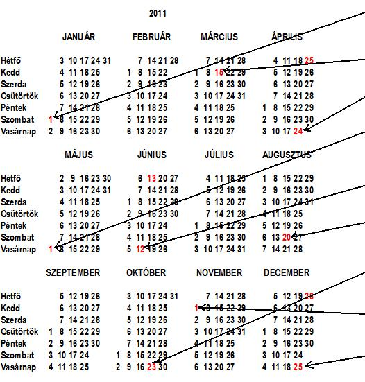

Exerciții și lecturi
Activitatea 197 — Lecția 032, exercițiul 003
Revino la lecție pentru explicații și exemple. Completează activitatea înainte de a consulta răspunsurile.
Revino la Kissnének fogorvoshoz kell mennie / Doamna Kiss trebuie să meargă la dentistCompletați propozițiile scriind datele cu litere.
|
 |
|
Vezi răspunsurile
- január elsején
- Március tizenötödike
- április huszonnegyedikén
- Május elseje
- június tizenkettedikén
- Augusztus huszadika
- Október huszonharmadika
- November elseje
- december huszonötödikén